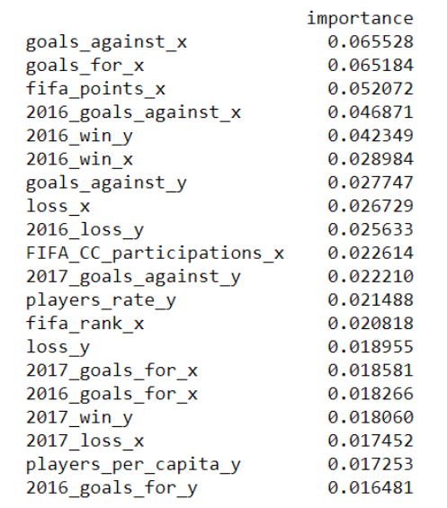

With ~130 columns it could start to become noisy. Let's try and find the most significant predictors only.
-
Statistically Significant Features
Regression models offer us analysis of the statistically significant features, the predictors for
which the p-value is smaller than 0.05. When running our baseline regression model for goal difference
we found this list of significant features to be empty. Meaning none of the feature show a significant
linear relationship with our target.
-
Correlation Analysis
Since we are dealing with a high dimensional dataset, we have grouped the features and ran the correlation
on each group to find positive correlated featured with our target.
The following features showed positive correlation with our target: 'players_rate_y', 'Age_x', 'win_y',
'loss_x', 'goals_for_y', 'goals_against_x', 'aggressive _y', 'protective _y', 'fifa_points_y',
'fifa_rank_x'
KNN, LDA and Linear Regression models were all rerun with the above set of features.
- KNN - both train and test results are worse
- LDA - decreased accuracy on the train set but a 10% improvement in the test accuracy.
- Linear Regression: R squared score was improved significantly on both train and test set. This
time the significant features list was not empty and included:
- const -7.656067
- win_y 2.175747
- fifa_points_y 0.000921
- fifa_rank_x 0.009149
-
Forward Stepwise Selection
Implementation of this algorithm produced the following subset of selected predictors: 'fifa_rank_x',
'fifa_rank_y', 'loss_x', 'goals_against_x', 'goals_for_x', '2016_goals_for_y', 'goals_against_y'
This list is very similar to our correlation analysis above with the exception of the protective
and aggressive features.
Models ran with this subset of predictors and results are as follow
- Logistic regression was significantly improved on the training score but not on the testing score
which even decreased a bit.
- Having a small subset of predictors made it possible to add polynomial terms to our regression
and also run QDA. Both achieved improved scores compared with our “All features” models.
-
Random Forest Features Importance
Our Random Forest model ran with cross validation to select the optimal tree depth. It resulted in
our highest score on the test set. Its importance features analysis produced:
